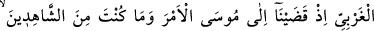
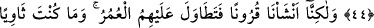

HEVESİNE UYANDAN
DAHA SAPIK KİM
OLABİLİR?
43. Andolsun biz, ilk nesilleri yok ettikten sonra Mûsâ’ya, -düşünüp öğüt alsınlar
diye- insanlar için apaçık deliller, hidâyet rehberi ve rahmet olarak o Kitab’ı
(Tevrat’ı) vermişizdir.
44. (Rasûlüm!) Mûsâ’ya emrimizi vahyettiğimiz sırada, sen batı yönünde
bulunmuyordun ve (o hadiseyi) görenlerden de değildin.
45. Bilakis biz nice nesiller var ettik de, onların üzerinden uzun zamanlar geçti.
Sen, âyetlerimizi kendilerinden okuyarak öğrenmek üzere Medyen halkı arasında
oturmuş da değilsin; aksine (onları sana) gönderen biziz.
46. (Mûsâ’ya) seslendiğimiz zaman da, sen Tûr’un yanında değildin. Bilakis,
senden önce kendilerıne uyarıcı (peygamber) gelmeyen bir kavmi uyarman için